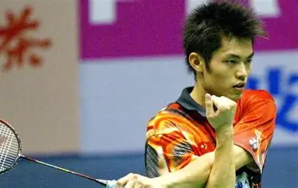
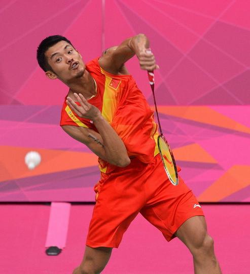
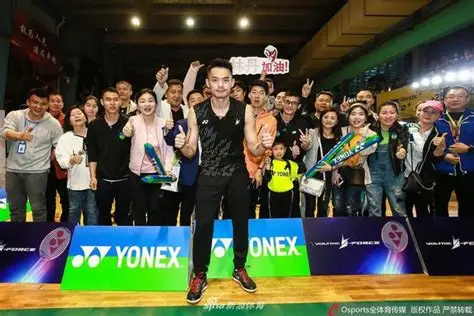
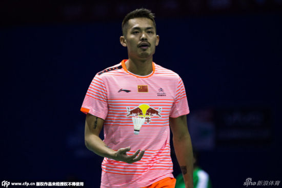
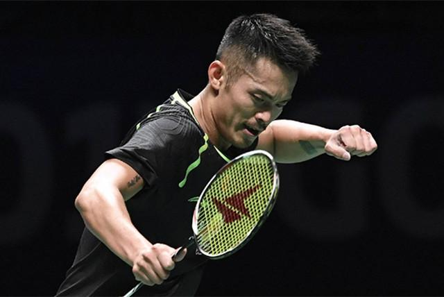
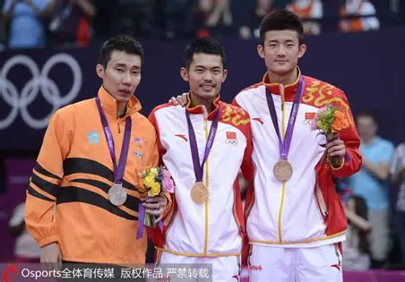

人物档案
早年经历
1983年10月14日，林丹出生于福建省龙岩市上杭县临江镇。5岁时，林丹被父母送到业余体校练习羽毛球，从此开启了自己的羽毛球之路。1995年，12岁的林丹在全国青少年比赛中一举夺得男单冠军，凭借出色的表现被八一队选中，正式开启了专业运动员生涯。

2000年，17岁的林丹入选中国国家羽毛球队一队，成为国家队重点培养的男单新星。进入国家队后，林丹凭借刻苦的训练和极具冲击力的打法，快速在国际赛场崭露头角。2002年8月，不满19岁的林丹登上国际羽联男单世界第一的宝座，成为当时世界羽联最年轻的男单世界第一，“超级丹”的名号开始在全球羽坛传开。
技术特点
- 暴力突击杀球：左手持拍的林丹，杀球速度最高可达325公里/小时，力量大、落点精准、线路多变，是他最核心的得分武器，巅峰时期的后场突击堪称无解。
- 细腻网前技术：林丹的网前搓球、放网、勾对角极其细腻，能够精准控制球的落点，限制对手进攻，为自己的后场突击创造空间，网前稳定性堪称历史顶级。
- 顶级防守反击：林丹的防守能力被称为“铜墙铁壁”，鱼跃救球、接杀挡网、防守变线能力都是历史顶级，能在极端被动的情况下完成防守反击直接得分。
- 大心脏心理素质：越是关键的决赛、比分胶着的时刻，林丹的发挥越稳定。职业生涯无数次在决胜局落后的情况下完成逆转，大赛心态堪称历史独一档。

社会影响力
林丹不仅是羽坛传奇，更是中国体育的标志性人物之一。他的职业生涯推动了羽毛球运动在全球的普及和发展，成为无数羽毛球爱好者的偶像和榜样。

退役后，林丹依然致力于羽毛球运动的推广，开设羽毛球训练营，参与公益活动，持续为中国体育事业和羽毛球运动的发展贡献力量。他的拼搏精神、永不言弃的竞技态度，影响了一代又一代的体育人。


个人基本信息
中文名：林丹
别名：超级丹
国籍：中国
民族：汉族
出生地：福建龙岩
出生日期：1983年10月14日
身高：178cm
运动项目：羽毛球男单
专业特点：左手持拍，进攻型打法
重要事件：双圈全满贯得主
